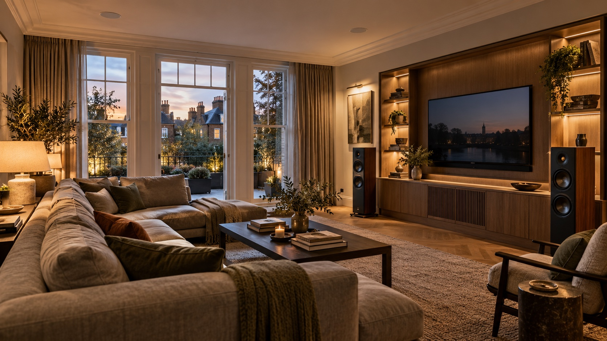
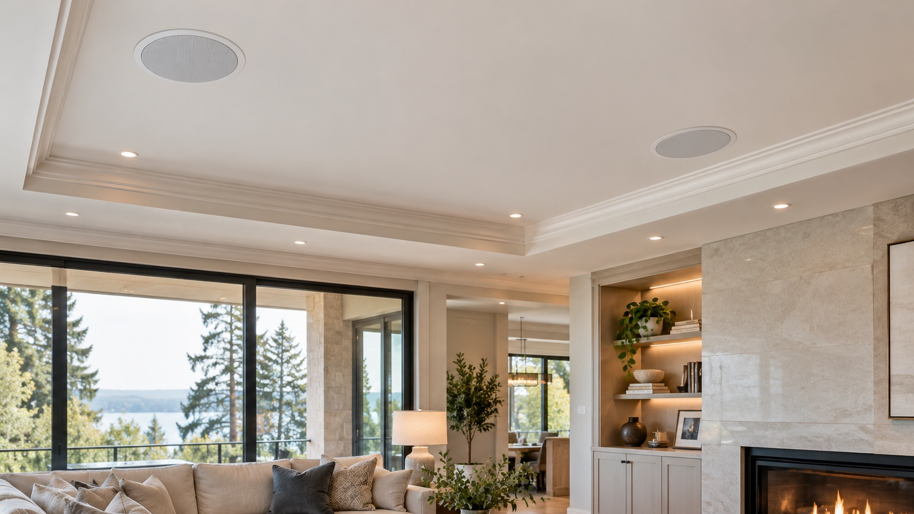

Multi-room audio
Choose the rooms that share music, group them when you want, and keep everyday control straightforward.
AUDIO VISUAL
From music in one room to a considered cinema space, the right audio visual setup should feel effortless to live with.
Get in touch
SOUND THROUGH THE HOME
Audio should suit both the room and the people using it. We help shape the speaker positions, sources and controls around how you enjoy music, films and time at home.

FROM ONE ROOM TO MANY
Listen in the kitchen while you cook, continue into the living room, or give a dedicated cinema space a more immersive feel. The system can be designed for one room or arranged in zones around the home.
Plan the rooms and zones you want to listen in, and how they should work together.
Consider discreet ceiling or wall speakers, or more visible speakers as part of the room.
Bring your chosen music sources and controls together for an easy handover.
LISTEN · WATCH · ENJOY
We help shape the room, equipment and connections into a system that works well and looks at home.
Choose the rooms that share music, group them when you want, and keep everyday control straightforward.
Set up Sonos or another chosen source so your existing streaming services are ready to use.
Plan in-ceiling or in-wall speakers around the room, listening positions and desired visual finish.
Bring screen, speakers and supporting equipment together around the room and the films you enjoy.
Install and connect the selected televisions, speakers, amplifiers and other AV equipment.
Connect the agreed sources and controls, then take time to explain how the system works.
START WITH A CONVERSATION